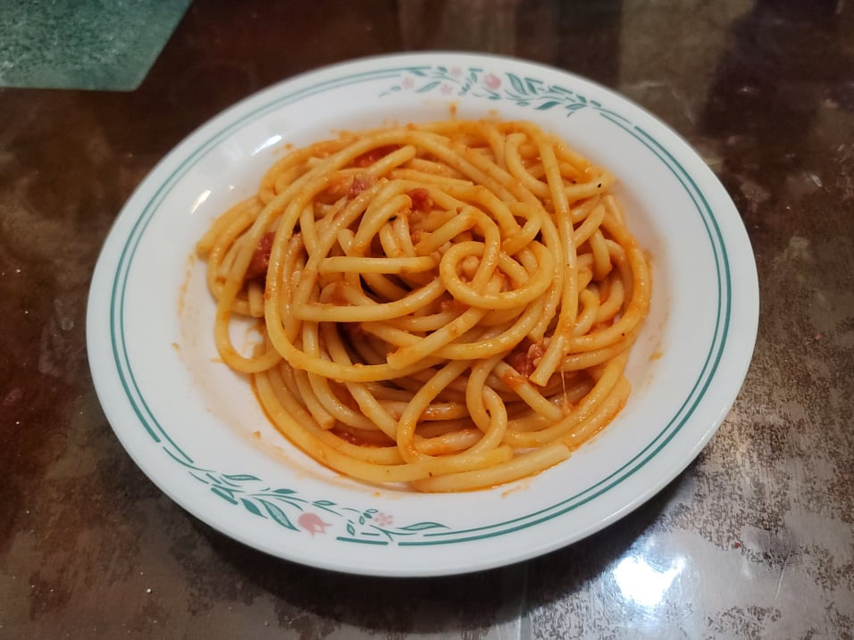

Bucatini all' Amatriciana

Ingredients:
- 1 lb Dried bucatini
- 1/2 lb Guanciale OR Pancetta
- Black pepper, freshly ground, to taste
- 1 28 oz can San Marzano peeled tomatoes
- 1 cup Pecorino, finely grated
- Salt, to taste
Instructions:
- Empty the can of tomatoes into a large bowl. Crush the tomatoes with hands until it becomes a rustic sauce.
- Bring a pot of salted water to a boil. Add in the pasta and let cook until right before al dente.
- While the pasta cooks, cook the pancetta in a large pan over medium heat until crisp and the fat renders.
- Add in the black pepper to the pan and let cook for 1 minute. Then add the tomatoes and cook until the pasta is done and the sauce is reduced to preference.
- Add the pasta from the pot into the pan, reserving the pasta water. Cook and mix until the pasta is al dente. Mix in the cheese and then taste and adjust for salt. Serve immediately.